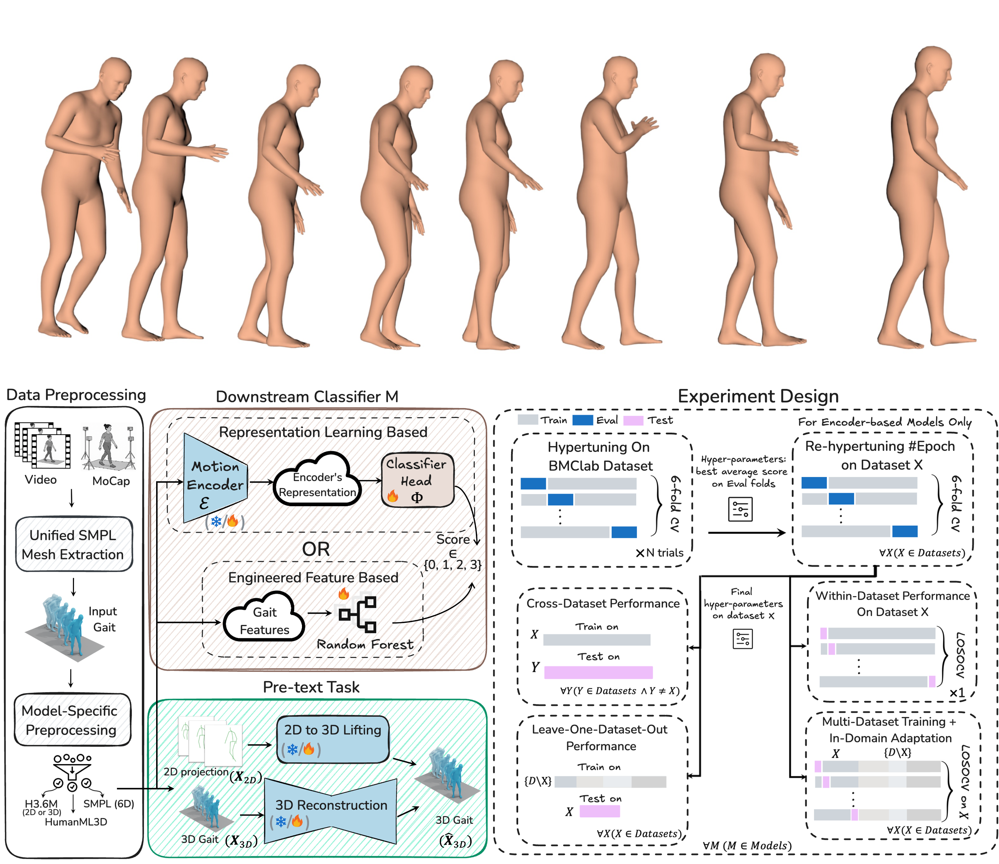
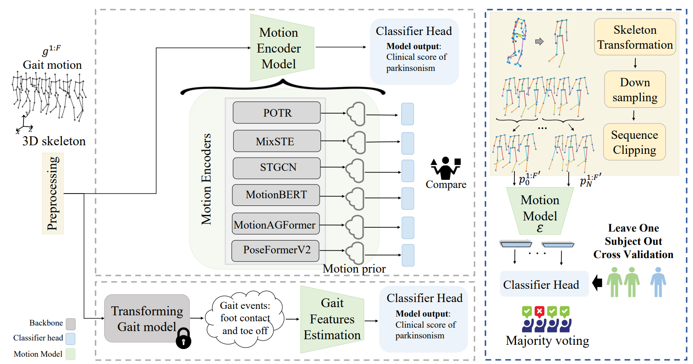
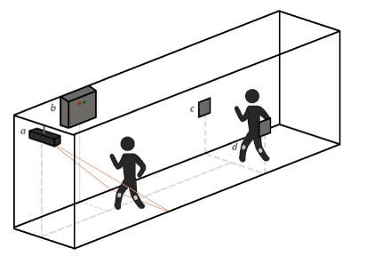
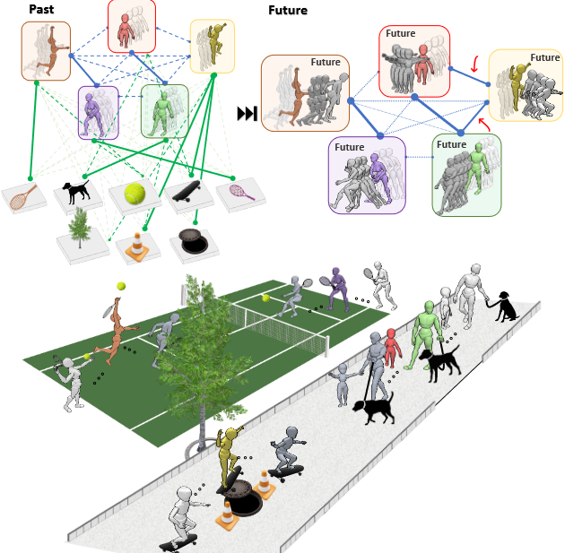
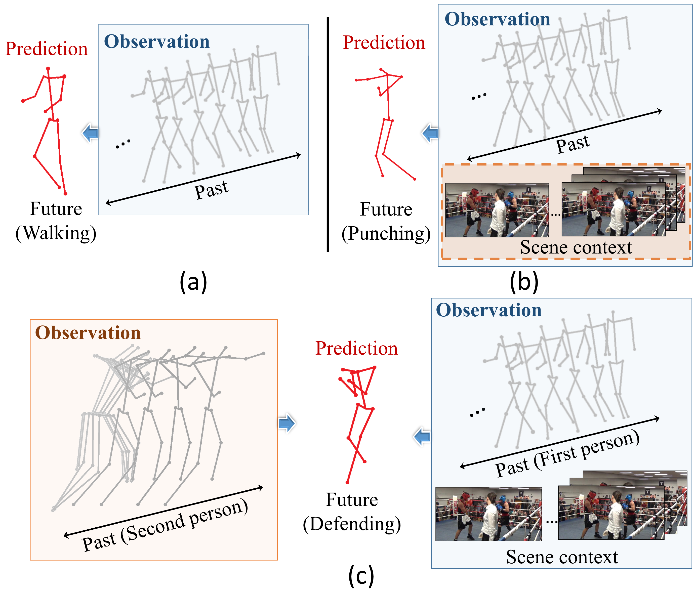
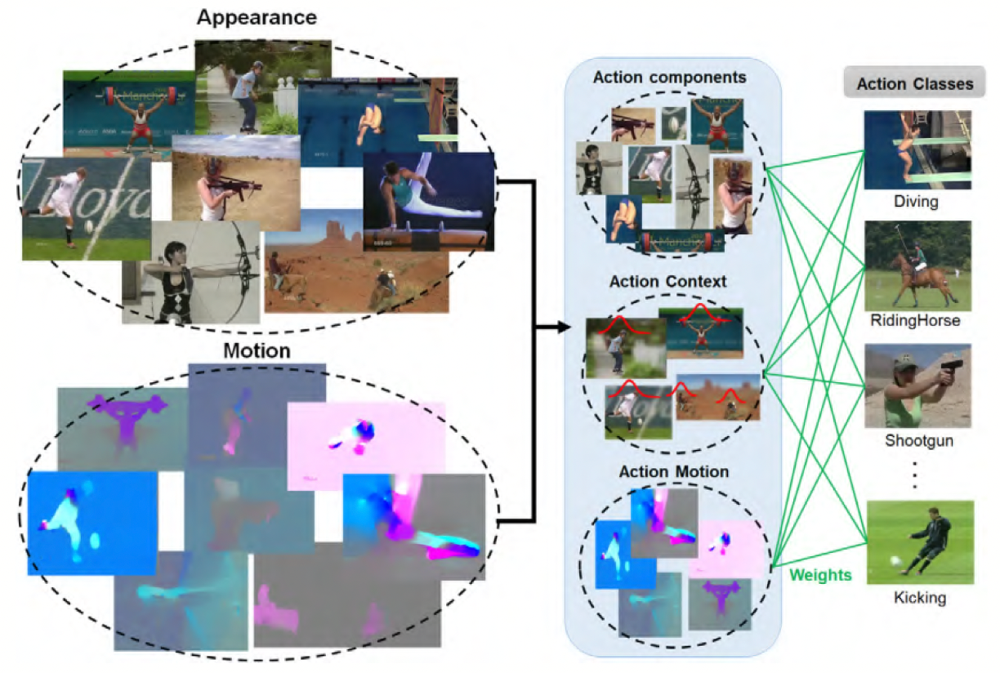

|
Vida Adeli I'm a Computer Science PhD candidate at University of Toronto, supervised by Dr. Babak Taati and Dr. Andrea Iaboni. I am also a Faculty Affiliate Researcher at Vector Institute and a Research Assistant at KITE - University Health Network. Previously, I was a Researcher at Vision & Learning for Autonomous AI (VL4AI) Lab, Monash University. I'm currently doing an internship at Pickford AI, focusing on video generation and real-time 3D animation generation. 


|
{kind=link}
ResearchMy research focuses on generative models applied across a range of computer vision tasks, with particular focus on 3D human motion understanding, realistic animation generation, and clinical gait analysis. |
Selected publications |
|
PickStyle: Video-to-Video Style Transfer with Context-Style Adapters
Soroush Mehraban*, Vida Adeli*, Jacob Rommann, Babak Taati Kyryl Truskovskyi * Equal contribution arXiv Project page / arXiv PickStyle is a diffusion-based video style transfer framework that preserves video context while applying a target visual style. It uses low-rank style adapters and synthetic clip augmentation from paired images for training, and introduces Context-Style Classifier-Free Guidance (CS-CFG) to independently control content and style, achieving temporally consistent and style-faithful video results. |
|
|  |
CARE-PD: A Multi-Site Anonymized Clinical Dataset for Parkinson's Disease Gait Assessment
Vida Adeli, Soroush Mehraban, Ivan Klabucar, Javad Rajabi, Benjamin Filtjens, Soroush Mehraban, et al. Neural Information Processing Systems (NeurIPS), 2025 Project page / arXiv / Dataset CARE-PD is the largest publicly available archive of 3D mesh gait data for Parkinson’s Disease, collected across 9 cohorts from 8 clinical centers. It provides standardized, anonymized SMPL representations and benchmark protocols for clinical motion analysis on PD. |
|
GAITGen: Disentangled Motion-Pathology Impaired Gait Generative Model
Vida Adeli, Soroush Mehraban, Majid Mirmehdi, Alan Whone, Benjamin Filtjens, Amirhossein Dadashzadeh, Alfonso Fasano, Andrea Iaboni, Babak Taati arXiv project page / arXiv GAITGen is a generative framework that synthesizes realistic gait sequences conditioned on Parkinson’s severity. Using a Conditional Residual VQ-VAE and tailored Transformers, it disentangles motion and pathology features to produce clinically meaningful gait data. GAITGen enhances dataset diversity and improves performance in parkinsonian gait analysis tasks. |
|
|  |
Benchmarking Skeleton-based Motion Encoder Models for Clinical
Applications: Estimating Parkinson's Disease Severity in Walking Sequences
Vida Adeli, Soroush Mehraban, Irene Ballester, Yasamin Zarghami, Andrea Sabo, Andrea Iaboni, Babak Taati IEEE International Conference on Automatic Face and Gesture Recognition (FG), 2024 Code / arXiv Evaluating recent motion encoders for the task of parkinsonism severity estimation (UPDRS III gait) |

|
MotionAGFormer: Enhancing 3D Pose Estimation with a Transformer-GCNFormer
Network
Soroush Mehraban, Vida Adeli, Babak Taati Winter Conference on Applications of Computer Vision (WACV), 2024 Code / video / arXiv Estimating 3D locations of 17 main joints from a monocular video. |
|  |
Ambient Monitoring of Gait and Machine Learning Models for Dynamic and Short-Term Falls Risk Assessment in People With Dementia
Vida Adeli, Soroush Mehraban, Navid Korhani, Andrea Sabo, Sina Mehdizadeh, Alastair Flint, Avril Mansfield, Andrea Iaboni, Babak Taati IEEE journal of biomedical and health informatics (JBHI), 2023 arXiv A machine learning system using ambient gait monitoring to predict short-term fall risk in people with dementia. |
|  |
TRiPOD: Human Trajectory and Pose Dynamics Forecasting in the Wild
Vida Adeli, Mahsa Ehsanpour, Ian Reid, Juan Carlos Niebles, Silvio Savarese, Ehsan Adeli, Hamid Rezatofighi IEEE/CVF International Conference on Computer Vision, (ICCV 2021) Project Page / arXiv / Video / Benchmark / ICCV2021 Workshop TRiPOD jointly forecasts human body pose dynamics and global trajectories in the wild by modelling human-human and human-object interactions. |
|  |
Socially and Contextually Aware Human Motion and Pose Forecasting
Vida Adeli, Ehsan Adeli, Ian Reid, Juan Carlos Niebles, Hamid Rezatofighi IEEE Robotics and Automation Letters (RA-L) and IEEE/RSJ International Conference on Intelligent Robots and Systems (IROS), 2020 arXiv/ Video A unified end-to-end model that predicts both human global motion (trajectory) and detailed body pose jointly, using social and scene context to improve forecasting. |
|  |
A component-based video content representation for action recognition
Vida Adeli, Ehsan Fazl-Ersi, Ahad Harati, Image and Vision Computing, 2019 Paper Proposes a component-based video content representation for human action recognition, decomposing videos into meaningful parts to improve classification in complex scenes. |
Benchmarks and Workshops
|
Honors and Awards
|
Teaching Assistant |
Academic Service
|
|
Website Template source code. |